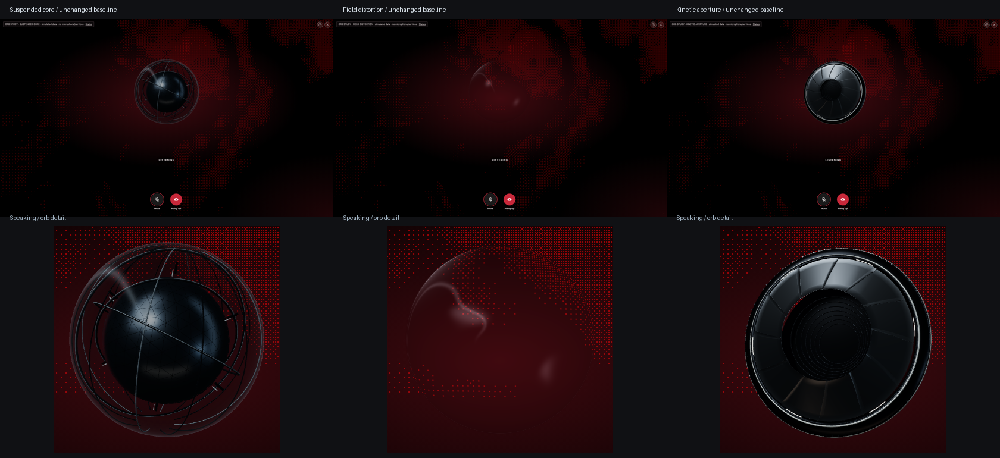
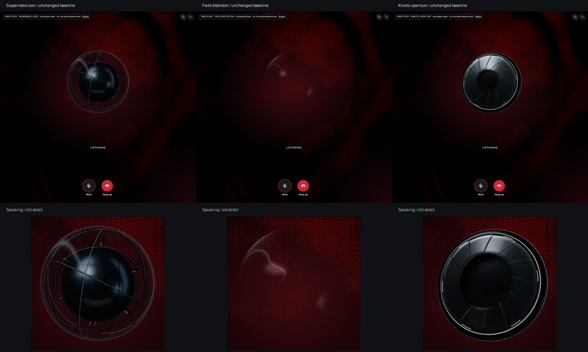

Return to animated previews · Verification results
The comparison screenshots are committed. Recordings, motion-frame sheets and verification results are git-ignored local evidence in verification-2/.

Core live recording · Field live recording · Aperture live recording
Core motion frames · Field motion frames · Aperture motion frames

Core live recording · Field live recording · Aperture live recording
Core motion frames · Field motion frames · Aperture motion frames
132 baseline comparisons and 18 motion sequences pass in Chromium. The four motion unit tests pass. No overflow; existing controls and reduced motion verified. No other browser or hardware performance claims.